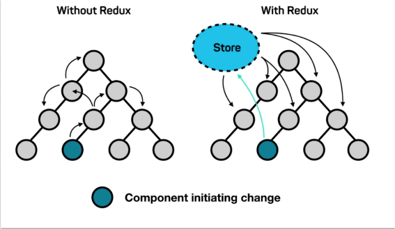
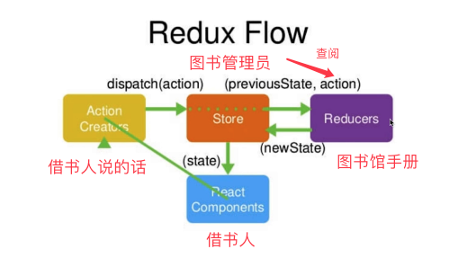
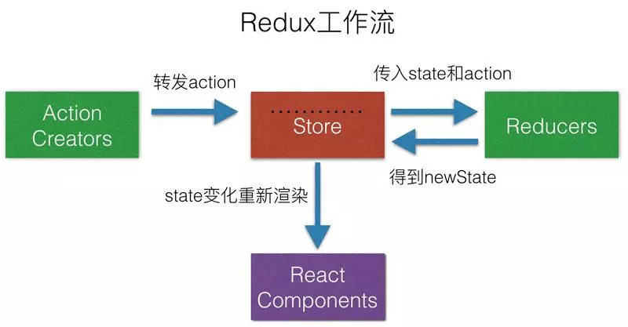
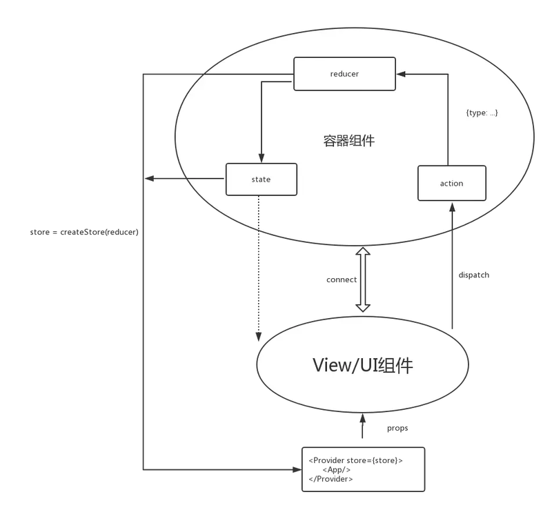

预测未来最好的方法就是去创造未来
——林肯 (美国前总统)
React 通信之 Redux
背景
React 组件 componentDidMount 的时候初始化 Model，并监听 Model 的 change 事件，当 Model 发生改变时调用 React 组件的 setState 方法重新 render 整个组件，最后在组件 componentWillUnmount 的时候取消监听并销毁 Model。
图片来源：https://www.processon.com/view/5db55958e4b0e433944fdc87
第一部分 Redux的出现
存在即合理
如下图左侧所示，react单向流动的特性，导致在复杂的状态管理面前，会越来越麻烦。Redux的出现就是为了解决state里面的数据问题。
如下图右侧所示，redux维护单一状态库。
Redux三大特性：
1 唯一数据源
2 保持只读状态
3 数据改变只能通过纯函数来执行

第二部分 Redux概念
一、粗略认识
首先回想下，曾经你去图书馆借书的场景+上图右侧树图。
- 你去图书馆；
- 询问管理员是否有《西部世界iii》这本书；
- 管理员查阅库存；
- _反馈_给你，自己网上找资源去；
- 你去网上找资源。
这个流程其实包含了Redux的整个流程。
询问 + **查阅** = **_反馈。__即：action + state = new state**_
有果必有因


二、具体的概念
React-Redux 将所有组件分成两大类：UI 组件（presentational component）和容器组件（container component）。
UI 组件负责 UI 的呈现，容器组件负责管理数据和逻辑
你可能会问，如果一个组件既有 UI 又有业务逻辑，那怎么办？回答是，将它拆分成下面的结构：外面是一个容器组件，里面包了一个UI 组件。前者负责与外部的通信，将数据传给后者，由后者渲染出视图。
React-Redux 规定，所有的 UI 组件都由用户提供，容器组件则是由 React-Redux 自动生成。也就是说，用户负责视觉层，状态管理则是全部交给它。
**
以上摘录自—阮一峰的网络日志，建议初学者多读几遍。
- Action： 把数据从应用传到 store 的有效载荷；
- Store: 保存数据的地方；
- Dispatcher: view发出Action的唯一办法；
- Reducer： Store收到Action以后，必须给出一个新的state，这样view才会发生变化。Reducer即根据Action计算state；
- State: store里面存储的数据。


三、示例代码
Redux一个简单的加数操作，涉及完整的流程。
其中涉及
- redux各个概念；
- UI组件 & 容器组件 的相互关系；
- Provider的使用结合下图理解
1
2
3
4
5
6
7
8
9
10
11
12
13
14
15
16
17
18
19
20
21
22
23
24
25
26
27
28
29
30
31
32
33
34
35
36
37
38
39
40
41
42
43
44
45
46
47
48
49
50
51
52
53
54
55
56
57
58
59
60
61
62
63
64
65
66
67
68
69
70
71
72
73
74
75
76
77
78
79
80
81
82
83
84
85
86
87
88
89
90
91
92
93
94
95
96
97
98
99
100import React, { Component } from "react";
import PropTypes from "prop-types";
import ReactDOM from "react-dom";
import { createStore } from "redux";
import { Provider, connect } from "react-redux";
// 生成组件
class Counter extends Component {
render() {
const { value, onIncreaseClick } = this.props;
return (
<div>
<span>{value}</span>
<button onClick={onIncreaseClick}>Increase</button>
</div>
);
}
}
Counter.propTypes = {
value: PropTypes.number.isRequired,
onIncreaseClick: PropTypes.func.isRequired
};
// 定义action
const increaseAction = { type: "increase" };
/**
* Reducer函数
* @param {*} state 默认值
* @param {*} action 根据action来计算state.
*/
function counter(state = { count: 0 }, action) {
const count = state.count;
switch (action.type) {
case "increase":
return { count: count + 1 };
default:
return state;
}
}
/**
* 创建store -> 需要reducer -> 默认值+action
*/
const store = createStore(counter);
/**
* 建立一个从（外部的）state对象到（UI 组件的）props对象的映射关系。
* @param {*} state
*/
function mapStateToProps(state) {
return {
value: state.count
};
}
/**
* 建立 UI 组件的参数到store.dispatch方法的映射
* 定义了哪些用户的操作应该当作 Action，传给 Store。
* 它可以是一个函数，也可以是一个对象。
*
* 1. 函数：
* - 参数：
* 可以拿到dispatch和ownProps（容器组件的props对象）两个参数；
* - 返回值
* 一个对象，每个键值对都是一个映射，[键名对应函数名]
* 定义了 UI 组件的参数怎样发出 Action。
* 2. 对象
* 它的每个键名也是对应 UI 组件的同名参数，键值应该是一个函数，
* 会被当作 Action creator ，返回的 Action 会由 Redux 自动发出。
* @param {*} dispatch
*/
function mapDispatchToProps(dispatch) {
return {
// 同名函数 onIncreaseClick， dispatch 一个action
onIncreaseClick: () => dispatch(increaseAction)
};
}
/**
* connect 自动生成容器组件，将UI组件[Counter]与[容器组件]即关联起来。
* Counter: UI 组件
* mapStateToProps： 输入逻辑：外部的数据（即state对象）如何转换为 UI 组件的参数
* mapDispatchToProps： 用户发出的动作如何变为 Action 对象，从 UI 组件传出去。
*/
const App = connect(
mapStateToProps,
mapDispatchToProps
)(Counter);
// React-Redux 提供Provider组件，可以让容器组件拿到state。
// Provider在根组件外面包了一层，这样一来，App的所有子组件就默认都可以拿到state了
// 原理： React中的context属性，
ReactDOM.render(
<Provider store={store}>
<App />
</Provider>,
document.getElementById("root")
);

图片来源：https://juejin.im/post/5acdbe8f51882548fe4a7af1
总结
这个例子中，最外层的Provider利用react-redux中的provider组件，那么究竟provider组件做了什么？为何provider子组件能够或许context属性？
上篇文章利用context进行传值，并未过多的解释说明。
Provider 本身是一个 react 组件，这一点首先要搞清楚。它的实现原理非常简单，利用了 React 的 context 这一特性。文档Context - React, 只要在最外层的组件实现一个 getChildContext 这个方法，返回一个对象，内部的组件都可以通过 this.context 拿到这个对象。所以一个简单的 Provider 实现是这样的：
1 | class Provider extends React.Component { |
那么整个页面的逻辑流程就是：
- 创建Store，createStore(), 接受reducers&默认值；
- createStore 对每一个reducer进行dispatch一个action.type=@@redux/INTT类型的action，然后返回state默认值；
- render()进行渲染，每个子组件通过传入的this.context.store.getState()方法获取state对象+ownProps给mapStateToProps方法，构建props，应用到子组件上；
- UI组件触发action, 随即mapDispatchToProps触发相应的action；
- strore接收到action进行reduce，得到新的state，然后再调用所有子组件的mapDispatchToProps生成props.
- 最后provider进行重新渲染需要更新的组件。
第三部分
react-redux示例–TodoList demo
试着从头到位实现一边，会更加深对本文的理解。鉴于代码太多&上述的理解，应该是没问题的，但不要眼高手低。

感谢
一幅图明白React-Redux的原理
解析：让你弄懂redux原理
https://www.cnblogs.com/nayek/p/12369418.html
https://www.processon.com/view/5db55958e4b0e433944fdc87
https://www.ruanyifeng.com/blog/2016/09/redux_tutorial_part_three_react-redux.html